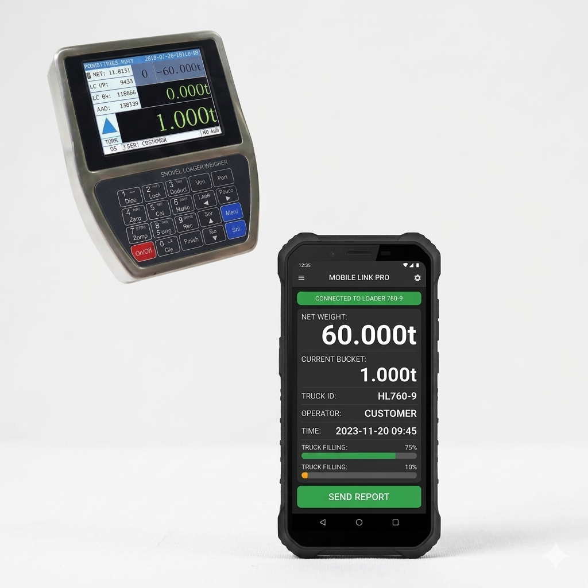
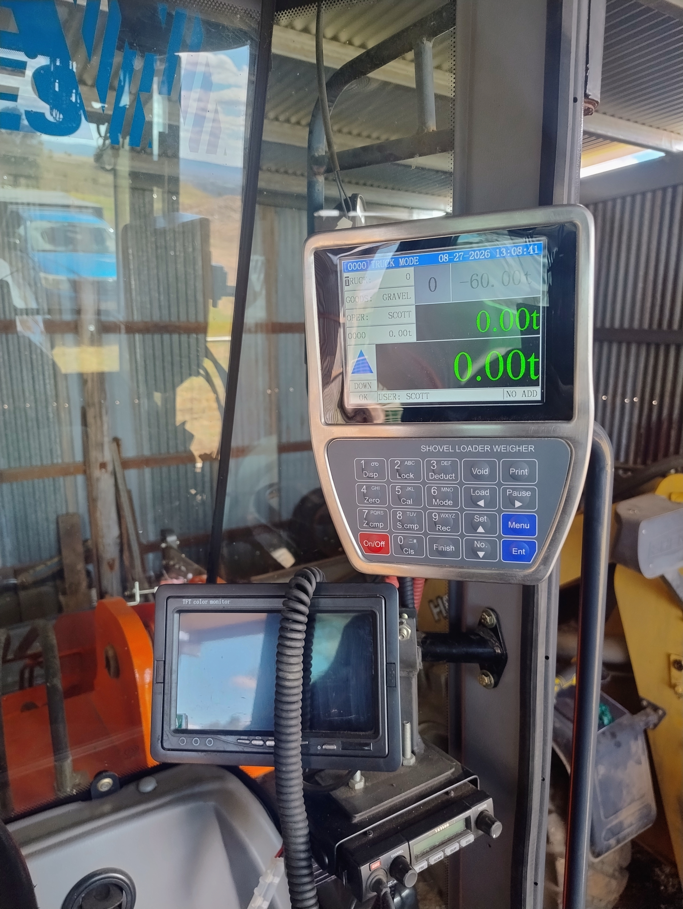

SPECIALISED IN WHEELED LOADER WEIGHING SOLUTIONS FOR CHINESE LOADERS.
LOADER SCALES INFORMATIONDurable and cost-effective loader scales suitable for various Chinese loader models.We have a remote view web page for the constant monitoring of the loader scales.
Monitor your loader scales remotely through our dedicated web interface, on your own web page anytime, anywhere. Please ask about our 1 time payment setup for remote monitoring.We garantee the best budget Web systems in the country because we control them and code them ourselves.

Intuitive interface for controlling and managing tally roll printers and related accessories. Large easy view colour display and Stainless Steel construction for durability.
